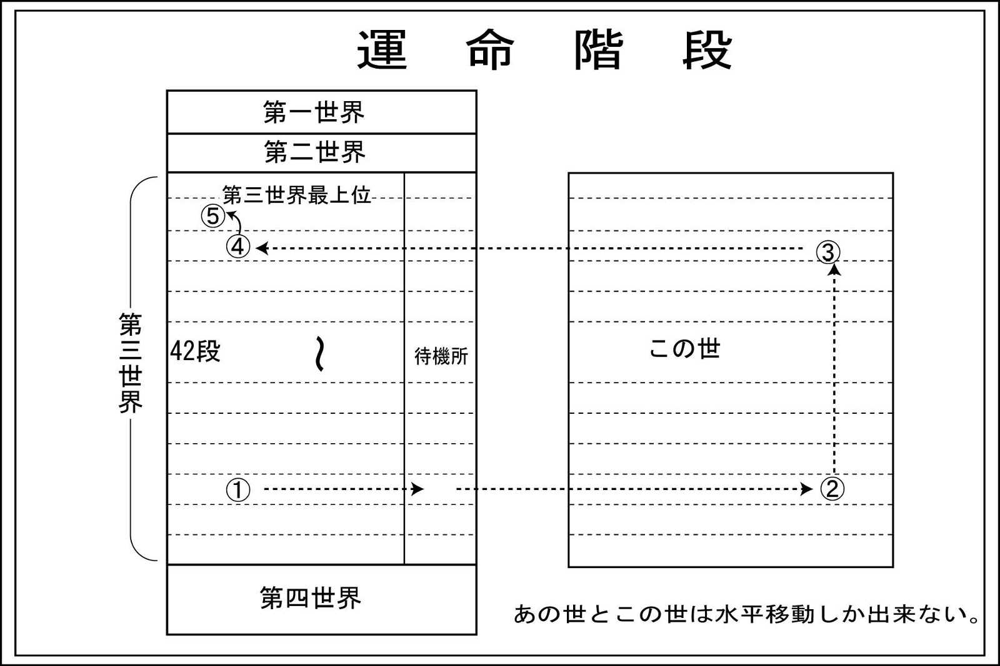

| あなたも私も「罪人」です。 | |
| 川口 裕清 | |
| (2015) | |
まえがき
私達はどこから来てどこに行けば良いのでしょうか。これこそ人類が古来より追い求めてきていますが、いまだ皆が納得する回答は得られていません。
それは本当の私達を取り巻く環境が理解されていないからなのです。
現代日本人はある事象が現代科学で解明されない限り認めようとはしません。
そのため悲惨な殺人事件などが起こっても心理学者などが事件の背景を説明していますが、原因は本当にそれだけ？ということが多々あります。
古来より一般の人達よりも能力のある人達が多くの事象から「しないといけないこと」や「してはいけないこと」を口述及び文章で残してきました。それが一般的に「宗教」と言われているものです。
宗教とは心の安定を得るもの。人は弱いから頼りたくなる。
世界的には宗教に命をかける人が沢山いるにもかかわらず日本では「宗教」というと「それは迷信だ」と笑う人が文化人と言われる人達に多いのは大変問題です。
もちろん宗教には無駄なこともあることも事実です。
宗教を笑う人達は宗教に代わる「心の安定」を得るものを持っているのでしょうか？
またどうやって「弱い人」から脱皮したのでしょうか？
私には心の目が塞がっていて「見えるものしか信用しない」人が増加しているとしか感じられません。お金しか信用しない人の増加も難儀なことです。
この本はただ単にあの世、この世、その他の所や霊などはどうなっているのかを解き明かしたものです。
私達の永遠のテーマである「私達はどこから来てどこへ行く」のかも解説しています。
また神様とはどのような存在であるのかをわかりやすく説明しています。
これらを理解して少しでも豊かな人生を送ってほしいと願っています。
この本が皆様方の考え方の一助にしていただければ幸いです。
あなたも私も「罪人」です。
キリスト教の原罪（キリスト教では、「原罪」とは人類が最初に犯した罪。アダムとイブが禁断の木の実を口にして、神の命令に背いた罪。アダムの子孫である人類はこの罪を負うとされる。（出典ｇｏｏ辞書より））に、あなたは納得出来ますか。
殆どの人は納得がいかないと思われますので、納得のいくようにあなたにわかりやすい解説をいたしましょう。
旧約聖書は紀元前四世紀から紀元前五世紀に成立したと言われています。つまり神様がアダムとイブに大切な木だから絶対にさわるなと命令したにもかかわらず彼らがその命令を破りリンゴを食べた事で楽園を追放されたと言われています。
その後六千年も七千年もの間、そのことを根に持って子孫まで「原罪＝罪人」と言われるのはちょっと神様も度量がなさすぎると言われかねませんが、本当は神様はそんなことでちっとも根に持っていません。
それでは何が違っているのでしょうか。
それは楽園を追放されたのが遙か昔のアダムとイブではなくて今の「あなた」なのです。
私が何を言っているのかわからないかもしれません。この話は「本当の神と私達」を理解していただかなくてはいけませんので、まず最初にその話から始めましょう。
私達の身体には「霊」と「魂」が同居しています。
私達の身体は動いている車です。
私達の身体は動いている車（特にラリーのレースをしている車）にたとえられます。
つまり、車に運転手と助手（地図を見ながら方向を指示するナビゲータ）が乗っているのです。この運転手と助手の関係が非常に問題なのです。運転手は「魂」、助手は「霊」と呼ばれています。
運転手は車と運命共同体です。車が壊れてしまえば、運転手も終わりです。
しかし、助手は車に乗せてもらっているだけですので車が壊れても車から降りればいいのです。（車から降りると、元の場所（あの世）に戻らないといけません。）
つまり、車が壊れてしまえば「それで終わり」の運転手と、壊れてしまっても生き残る助手とが同じ車に乗っているのです。
運転手は出来るだけ車を長持ちさせるために、無理をさせないようにします。出来るだけ楽なことだけしたい、辛いことをしたくはない。死んだら終わりです。
それでは助手である「霊」の仕事とは一体何でしょうか。もちろん車にただで乗せてもらっているのですから、仕事は簡単にいうと車の行き先の案内役になります。運転手は初めての道を運転しているので、道路はよくわかりません。しかし、助手は地図（前生での体験）を持っています。その地図で右や左を運転手に指図するのです。
この運転手が助手であるナビゲータの意見（指図）を聞くか聞かないかが問題なのです。
私達の身体には「霊」と「魂」が同居しています。
あなたは転生輪廻（てんしょうりんね：死んであの世に還った霊魂（魂）が、この世に何度も生まれ変わってくること）を信じますか。信じませんか。
先ほどのたとえの通り、私達の身体には「霊」と「魂」が同居しています。この「霊」と「魂」を同じにして霊魂と言う場合がありますが、これは間違っています。
「霊」は転生輪廻を繰り返しますが、「魂」は私達の肉体の細胞約六〇兆個の全体の意識なのです。
つまり死んだ場合、あの世に戻らなければならない「霊」と消滅してしまう「魂」が私達の身体に乗っているのです。
「霊」と「魂」はある時は協調し、ある時は反駁します。
あなたの身体に「霊」が強く作用している場合は、「転生輪廻を信じる」立場を取る場合が多く、「霊」が弱い場合は「転生輪廻を信じない」場合が多いのです。
先ほどのたとえでは、助手の話をよく聞く運転者の場合は、転生輪廻を信じたり、神を信じる人が多く、助手の話をほとんど聞かない運転者の場合は、「死んだら終わり」と転生輪廻どころか神を信じない人が大多数です。
死んだ場合あの世に戻らなければならない「霊」と死んだ場合消滅してしまう「魂」が同居していることで難しい問題が出ます。
「魂」の立場に立てば死んだら終わりですので、楽になることが大好きです。生きている時に楽しいことをしたい。苦しいことはしたくない。美味しいものをたくさん食べたい。無理をして身体を壊したくない。一日でも長く生きていたい・・・・。まるで今の時代ならほとんどの人達の願いでしょう。
逆に死んだら戻らなければならない「霊」は次の生まれ変わりに備えなくてはいけませんので、生きている間にしなければならないことが沢山あります。
死んだあとの次の生まれ変わりには、今よりも良い環境に生まれるために努力をしなければならない「霊」と、苦労や努力は死んだら何も残らないからと何もしたくない「魂」との軋轢を「葛藤」と言います。
この私達の身体に同居している「霊」と「魂」の中で今回取り上げるのは「霊」です。
第二章 この世、あの世の仕組み

転生輪廻は死ねば起こるということではありません。転生輪廻を信じる人達が「生まれ変わったら・・・」と簡単に言うこともありますが、本当はそんなに簡単ではありません。遊園地のジェットコースターに順番が来たら乗れるような事ではありません。
それではあなたが死んだ場合を仮定してみましょう。
あなたが寿命で亡くなった場合
あなたの肉体から霊が離れます。霊は肉体から離れると一般的にこの世には留まることはできません。ほとんどの霊はあの世に向かいます。
あの世ではあなたの生前の行いにより居場所が指定されています。
あの世は運命階段と呼ばれる四十二階建てのマンションのようなものです。建物と違うのは一番上が一段目、その下が二段目・・・・、一番下が四十二段目と呼ばれることです。
あなたの出生の時のランクから生きている時の行いにより担当の神様と先祖様の協議の上で、上に何段目の所か下に何段目の所かが決定され、該当する段数の扉が開きます。
一般的には亡くなってから四十九日間扉は開いているそうです。その期限が過ぎると扉は締まります。
何年も意識不明などで良くなることなく亡くなったという場合は、ご先祖方が「まあ、しばらくそちら（この世）で苦労しなさい」と、ほとんどあの世に行くことを拒否されている場合が多いのです。
あなたが自殺などで亡くなった場合
自殺などあの世の許諾もなく一方的にあの世に行ってしまった場合は、それまでどんな良い行いをしていてもあなたを受け入れてくれる場所はありません。
あなたを待っているのは四十二段目（一番下）のそばにぽっかり開いている大きな穴だけです。あなたはその穴に吸い込まれます。
そう、もうおわかりですね。そこは一般的に「地獄」と言われる所です。生きているのが辛いので自殺をして楽になりたいと思ってその通りに自殺をしたら、余計に辛い所に放り込まれます。
自殺をすると自分の肉体（魂）を殺すことになります。簡単に言えば一般的な殺人の場合はこの世で裁かれますが、自殺はあの世で「魂を殺した」として裁かれます。
想像を絶する辛い地獄から出る場合は一般的には人ではなく動物として生まれ変わります。
動物界から戻るためには、動物として生まれて七、八年苦労しなければならないそうです。
牛や豚のような畜産動物に生まれ変わるとほとんど七年、八年も経たずに殺されます。そうなると人間界に戻れる条件をクリア出来ないので、いつまでたっても無理になりますね。
寿命が全うできる愛玩動物などは希望者が殺到していると思われますので生まれ変わるのも大変です。
その動物で七年から八年頑張れば四十二段目（一番下）の所に行けて、人として生まれ変わることが出来るそうです。
あなたが意識不明などで何年も寝たきりで起き上がることも出来ずに亡くなった場合
寝たきりが続くと他人に迷惑をかけますので、運命階段のランクは下がります。
よほど元気な時に頑張ってボランティアをした等社会貢献をした場合は別ですが、あなたの亡くなった時に戻る場所は生まれ出た段よりランクが下がります。運命階段は世の中に良きことをするとランクが上がります。逆に世の中に迷惑などをかけるとランクが下がります。
思い橋
よくこの世とあの世を分ける所を「三途の川」と言われていますが、ほとんどの亡くなった人（霊）はこの三途の川を渡るのではありません。三途の川には橋が架かっています。この橋の名前は「思い橋」と言います。
亡くなった人（霊）はこの「思い橋」を渡ってあの世に行きます。
亡くなった霊（人）が全員この橋を通るので大混雑しているのかというと、そうではなくて一人ひとりの専用線が運命階段まで引かれていますので、別の所に行くことは出来ません。
地縛霊
亡くなった人の霊はこの「思い橋」のたもとに来れば、自分のこれから行く所は良い所か悪い所かがわかります。
良い所に行ける人は生前に善行を積んだ人ですのでルンルンで行くそうです。また「思い橋」のあの世側にご先祖様のお迎えが来ていただける人が多いそうです。「生きていた時によく頑張ったね」とお褒めの言葉もあるようです。
問題なのは生きていた時に何もしなかった人（霊）です。ほとんどの人（霊）は「生きていた時に、何もしなかったから良くない所でもしかたないな。」と諦めてこれからの生活を嘆きながら思い橋を渡ります。
しかし、納得がいかない人（霊）は「思い橋」を渡らずにあの世行きを拒否します。そのまま死亡してから四九日が経過すると、あの世のその人が行くべき場所の扉が締まります。
そうなれば選択肢は二つしかありません。
一つ目は自殺した人（霊）が行く運命階段のそばにぽっかり開いている地獄への通路です。
しかしその穴は本来行く運命階段の指定された場所より悲惨な所ですのでそこには行かないでしょう。
二つ目はあの世には行かず、この世に残る事です。
この世に残って霊は何をするのでしょうか。
一．恨みがあってその恨みを晴らすため。
いじめられたりして自殺を選んで、「あいつを絶対に許さない・・・。」と地獄に行くのを拒否して復讐に燃える場合。
死んだ時、家族などが喜んだ場合、「やれやれ・・・。」 と死んだ人を見て喜んではいけません。死んだ人が「私も悪かった。」と反省をしてくれればいいのですが、そうではない場合は死んだ人が逆上する場合があります。思い橋を渡った後でも、亡くなった人を悪く言うのはやめましょう。（死んでしまったらあの世からこの世には何も手出しが出来ないと思っていると大間違いの時があります。）
二．行き先のあの世の運命階段のランクが低く、かつ割り当てられた場所が酷い場合。
生きていた時にやらなければならない事を何もせずに楽な事ばかり追い求めていた為に良い所に行けなかっただけですが、それを反省せずにもっと良さそうな人に乗り込もうと、該当する人が来るのをじっと待っています。
霊は人の外側に雨合羽のようにかぶっているので、霊と仲があまり良くない人が来ると、チャンス到来とばかり「私があなたの希望を叶えてあげよう・・・。」と甘言で今までの霊の上に、被ってしまおうとします。今までの霊の上に新しい地縛霊を被ると被られた人はその霊の言う言葉に振り回されて「人が変わった」ようになります。
さて話を元に戻して、亡くなったあなたはあの世に行った時に、指定された場所に落ち着きました。
あの世で落ち着く場所
 あの世で落ち着く場所も生前の行いにより違いがあります。
あの世で落ち着く場所も生前の行いにより違いがあります。
生前の行いが良かった人（霊）は、暖かくて気持ちの良いまるで天国のような所のようです。生前一生懸命頑張れば、お付きの人がいる天国のような所もあるようです。また背中に羽根があるのでいろいろな所に飛んでいける場合もありそうです。もちろん自由に歩きまわることも出来る人（霊）もいます。
悲惨なのは生前の行いの良くなかった人（霊）達です。
日の当たらないような暗くて寒く首の高さまで水に満たされているようなまるで地獄のような所です。
俗に虚無と言われている所のようです。
ここはよく言われている身体に針を刺したり、いろいろな所に苦痛を与えると言われているような地獄のような所ではありません。
しかしながら考えようによっては今まで言われてきたような地獄よりも怖い所です。
ここは真っ暗な所やそれに加えて首にまで水が貯まっているような所です。
ここに放り込まれると許可がなければ出ることは出来ません。
霊は何も食べなくても死ぬことはありません。また人間のように食べなければ排泄する事もありません。
つまり何十年も誰にも合わずにそのままの状態で生きる事が出来るのです。
人と話もしなくて、音もしない時間の経過が全くわからない所に押し込まれます。何もすることがないと生前の思い出だけが走馬灯のように頭をめぐるでしょう。
記憶のある幼い頃から幼稚園、小学校、中学校、高校、大学・・・。結婚をして子供が出来て・・・。老後、死ぬ直前まで思い出すでしょう。
霊の場合は食事、排泄、睡眠まで不要です。この走馬灯のような思い出だけが霊の仕事となるのです。
生前の行いが良かった人（霊）は好きなことで楽しむことが出来るのに対して、生前の行いが悪かった人（霊）は果てしなく生前の思い出の繰り返しにより、楽しいことがあったとしても最終的に「あの時にこうしておけば良かったのに・・・。」と反省ばかりが思い出されるのです。
そうして生前の行いが良くなかった人（霊）は担当の神様が「もういいかな」と判断するまで、虚無のような所に放り込まれた状態で何十年も続くのです。
神様が「もういいかな」と判断されると、やっと虚無のような所から出られて「生まれ変わりの待機所」に移されます。
もちろん生前の行いが良かった人（霊）も望めば同じ「生まれ変わりの待機所」に行けます。
前生の行いにより転生輪廻が変わってくる
「生まれ変わりの待機所」に到着しました。
さあ、これから転生輪廻の活動を始めなくてはなりません。掲示板には募集の紙が貼られています。内容は「うちの子孫として今度男の子（女の子）が生まれます。子供と一緒に頑張ってくれる人（霊）を募集します。」などおびただしい数の募集案内があります。
あなたはいろいろ考えて自分が生まれ変わるのに一番ふさわしいと思われる家を決めます。その募集場所にあなたが行くと大勢の人（霊）が並んでいます。ここではまるで就職活動のように自分を売り込む必要があります。
こんなに人（霊）がいるの？とびっくりしながら順番を待ちます。あなたの番になりました。今度生まれる家の先祖達があなたにいろいろ質問をします。あなたは一生懸命目の前の先祖達に「私に行かしてくれたら、あなた達が楽になるように一生懸命頑張ります。」と必死に答えます。先祖達はあなたの前世のことは全て知っています。
前生で頑張って家を大きくしたり、先祖方を喜ばしたりした霊は評価が高く、逆に遊びまわって家を潰したり、小さくしたり、先祖方のことを何もしなかった霊は評価が低いのです。
評価が高い霊は転生輪廻がやりやすく、評価の低い霊は転生輪廻が非常に困難になるということです。
生まれ変わるというのは、まるで新車に乗り込むようなものです。
人気のある車やスーパーカーが出来ると乗りたい希望者がたくさん集まります。女の子なら美人か頭が良い子、男の子なら背が高くて、頭が良くて・・・・。そうなると生まれ出る子供の先祖達は大喜びで、乗り込む人（霊）の条件も厳しくなります。
身体障害者の場合
逆に生まれつきの身体に障害がある子供の場合、可愛そうですが希望者が非常に少ない場合が多いのです。しかしながら生まれた後で愚痴を言わない（親にどうしてこんな身体に産んだなど）場合は、あの世に戻ったときには、その霊は「良く頑張った」と引く手あまただそうで、運命階段の部屋に何年か入り、その後「生まれ変わりの待機所」に行くのではなく、あの世に戻れば直接「生まれ変わりの待機所」に行けるそうです。（すぐに別の正常な子孫として生まれ出る事が出来るようです。）
移植手術はダメ
また生まれつき移植手術をしなければ長く生きられない場合も同じです。霊にしてみれば生まれ出ても苦労ばかりですが、数年間我慢すれば死ぬのでまたあの世に戻ってこられて、次にすぐ新しい身体に乗り換えることが出来る（再度生まれ変わること）ならいいやとの予定で長生きの出来ない身体に乗り込むのですが、移植手術をして長生きをすることになると予定が狂います。まるで霊にとってみれば不自由な身体で長生き出来て困ったなということになります。
子供の両親にしてみればどんなことをしても可愛い子供を長生きさせてやりたいと思うのは当たり前の事で理解出来ますが、あの世の事情は全く違います。
医学や科学の進歩があの世にも微妙に良くない影響を与えています。
生活保護を受けると大変です
一般的に世の中の役立つように頑張れば運命階段のランクが上がり、世の中に迷惑をかけると運命階段のランクが下がります。
世の中に迷惑をかけるというと生活保護も同じようなものです。
現代の世間一般の考えは生活保護を受けて何もせずにブラブラしていると「楽でいいな」と思う人が多いようです。母子家庭で一生懸命働いている人の収入より生活保護の人の方が収入が多い場合があるなど、母子家庭の人の方が可哀想だという意見が最近多いですが、両者を比べるのが間違っています。
生活保護を受けてブラブラしている人より母子家庭で苦しくても頑張っている人の方が仕事を通じて社会のためになっているので尊いのです。
生活保護を受けている人はいつもどうしたら世の中に役立つことをするかを考え実行する必要があります。身体が悪いので働けないなど普通の人のようには動くことが出来ない場合が多い生活保護を受けている人は、世の中に役立つことをするためにボランティアなど社会貢献をしっかりしてランクが下がらないようにしなければなりません。あの世に行ったら大変なことになりますよ。
生まれ変わりの待機所に行けば元の家から別れます
 例えば田中さんの霊が「生まれ変わりの待機所」に行けば田中家の先祖ではなくなります。その後例えば石川家の子孫に乗り込むことが出来れば、その霊は石川家の子孫となるのです。
例えば田中さんの霊が「生まれ変わりの待機所」に行けば田中家の先祖ではなくなります。その後例えば石川家の子孫に乗り込むことが出来れば、その霊は石川家の子孫となるのです。
つまり古い家で例えば十代続いている家があるとしましょう。その家の息子さんが十代目としましょう。そうするとそのお父さんは九代目ですね。九代目のお父さんとお母さんは存命しているとします。
単純に考えると、初代から八代目までの人が亡くなっているということになります。そうするとご先祖は八×二（夫婦）で十六名となります。
この家のご先祖は十六名かというとそういうことはありません。いつまでもいつまでもその家の先祖でいることはありません。霊は転生輪廻を繰り返そうとするからです。
家を大きくしたご先祖はとっくに転生輪廻で現代に生き返っているかもしれません。
子供は霊の性格通りに育つ
この世に生まれ出る時には、霊は魂と出会い、共同して肉体をコントロールします。死んだら終わりの魂はこの世に生まれ出る時には、何も知らないまっさらな状態ですが、霊の場合は何度も転生輪廻をしていたりしていますので性格はいろいろです。
その性格には素直な霊とか人の良い霊とか性根の曲がった霊とかいろいろいます。
この霊が魂にいろいろな事を教えるわけですので、霊の性格に良く似た魂になります。
子供が犯罪などに関わったような場合、父親が母親に「お前がしっかり育てないからこうなったじゃないか」と文句を言うようなテレビドラマがよくありますが、性格の悪い霊が来た子供は霊の性格通り（性格が悪く）に育ちます。教育の問題ではありません。
性格の悪い霊が来た場合は、その家庭はほとんど家庭崩壊になっていきます。（先祖様が選んだのですから・・・。）
どうしようもないような性格の悪い霊の場合は霊の交換が必要になってくる場合があります。
死んでも所有権は残る
一般的に人が亡くなると、財産などは遺産相続で配偶者や子供などに相続されます。法律的には遺産相続されればその財産は相続された子供などの財産になります。亡くなった人の意に沿わなくても法律的に問題がなければ遺産相続の問題は終わります。
しかしながら亡くなった人が「あの金はおれのもの。誰にもやりたくない」と思った場合は話がややこしくなります。
そのことをわきまえないで何も考えないで財産分与を受けると、あっという間にお金が無くなったり、もらった土地を手放さなければならないようになる場合があります。
先祖は子孫を温かく見守るだけではない
一般的に神様がいるのなら我々を温かく見守り、困った時には我々を助けてくれる筈だ・・・。
先祖がいるのなら神様と同様に我々子孫を温かく見守り、困った時には我々を助けてくれる筈だ・・・。
と考える人が大多数でしょう。
でも神様の場合は後述しますが我々を助けるのが仕事ではありません。
また先祖の場合は子孫が先祖のことをいつも考え、先祖の喜ぶことをしているかどうかによって対応が変わってきます。
例えばある夫婦に子供が出来、子供を一生懸命勉強させ有名大学から有名企業に就職させたとします。子供がいつも「両親のおかげで今の生活が出来ている」と喜べば両親も満足するでしょうが、子供が結婚して孫が出来、両親を放っておいて子供夫婦と孫などと何も言わないで自分達だけ楽しい思いをしていると、次第に子供のことを快く思わなくなります。
そのうちに子供に何か問題が起こると、子供は両親に「私を助けてほしい」と言っても昔のように両親は真剣に子供のことを考えるようなことはしなくなります。
このような事と同じことです。普段から先祖のことを何もしていないと、困った時に助けてくれることはありません。
それどころか警告のため足を引っ張ること（仕事などがうまく行かないなど）があります。
また、先祖はこの世に生きている私達の「生き死に」を握っています。
ある時は寿命より早くこの世からあの世に引き戻し（死ぬということ）、ある時は寿命より長くこの世に留まらせることをします。
我々この世で生きている者からすると早死するのは良くなくて、長生きするのが良い人生であると思われがちですが、必ずしもそうではありません。
例えば病気で回復の見込みがなく、痛い目ばかりあいそうな場合で、先祖にとり可愛い子孫の場合は、あの世に引き戻す（死ぬ）場合が多いのです。なぜならば病院で寝たきりで時間が経つと、その人の運命階段のランクがどんどん下がります。長期間寝たきりで死んだ場合は目も当てられません。そのため可愛い子孫なら早く引き戻して運命階段のランクの下落を止める必要があるのです。
逆に元気な時に先祖に何もしなくて先祖にとってどうでもよい子孫の場合、回復の見込みがなくても放っておかれます。もちろんその人は寝たきりの期間が長くなれば運命階段がどんどん下がりますが、先祖はそれを望んでいたり、何も考えない場合が多いのです。
こうなると意識不明の人でもなかなか死ねません。病院の医師からは「心臓や内臓が強いから」と言われますがそれだけではありません。あの世の先祖が死んであの世に来ることを嫌がっているのです。
先祖にすれば「もっともっとこの世で苦労してからこちら（あの世）においで」ということになり、病院で苦労して死んだ後、あの世では余計に苦労するのです。
このような状態になった場合は、先祖の怒りなどを取り除かなければなかなか死ねないということです。
人生の終わりに
ほとんどの人は人生の終わりが近づいてくると願うことは「ポックリ死ぬ」ことでしょう。
昔、神戸の人に聞いた話ですが、東大阪の方にポックリ寺があり、毎月４〜５名でお参りに行っていたそうです。ところがその中の一人が本当にポックリ死んでしまったとの事です。その後残りの誰もそのお寺にお参りに行かなくなったそうです。
笑い話のようですが、つまり死ぬときにはアッという間に死にたいが、まだ今は死にたくないと言うことのようです。
現代は約九割の人が自宅ではなく病院で死ぬそうです。絶対とは言えませんが病院で死ぬ人達は「ポックリと死んでしまった」と言える人はほとんどいない筈です。家で死ぬ場合でも寝たきりの場合もあります。
ということは死ぬ人の約九割以上の人が「ポックリ」とは死んでいないということになります。（もちろん自宅で急病になって病院に行ってそのまま死亡したという場合もありますが今回は難しいことをいわないでおきましょう）
ポックリ死ぬには手順があります。（ポックリ寺にお参りすることではありません）
人は年をとると墓を作ったり終のすみかを求め、最近では終活という言葉が飛び交っています。元気に笑って過ごせばポックリ死ねると思っているようですが、死ねません。死ぬには手順があるのです。あの世にスムーズに行くためには・・・・。
ポックリ死ぬための手順
一．世の中に役に立って来たか？
寝たきりの人は世の中のお役に立つことをして来なかった証拠です。
二．自分の先祖のためにして来たか？
お寺で供養してきた事は含まれません。お寺で法事をしても
亡くなった人には届きにくいのです。
びっくりする位お寺に寄付をする人は先祖に伝わることがあるようです。
三．毎日体を使って来たか？
怠けて暮らして来た人は元気な老人にはなれません。
この一．二．三．が出来ている人はスムーズに寿命が尽きれば死ねるそうです。
一つでも欠けているとスッキリ死ねません。
じっくり考えてみるとこの手順の３つ共しっかり実行している人なんてほとんどいないでしょう。そのために病院で死ぬ人達が九割以上と言われています。その人達は全員あの世で苦労するのです。
これらの条件には例外はありません。どんなに運が良くても大金持ちでもやるべきことをやらなければポックリとは死ねません。逆に運がなくてもお金がそんなになくてもやるべきことをやっている人はポックリと死ねるのです。何もしなければポックリ寺にどんなにお参りしても無理です。
ピンピンコロリの人生を送りたければ、若くて元気な頃から頑張るしかありません。
どんなに社会的な名声を得たり、大金持ちになったとしても社会的な名声やお金をあの世に持って行けません。死ぬ直前にどのような生活をしていたかにより、その人のこの世での評価が決まります。
死ぬまで寝たきりの人はあの世からの評価が低い人で、転生輪廻が難しい人です。
寝たきりを抱えている人は、一刻も早く引き取っていただけるように先祖にお願いするしかありません。
掲示板
あの世での先祖様達の間の主な通信手段は掲示板になります。掲示板と言ってもいろいろな種類がありそうです。管理者である神様からの指示のようなものもあります。又人（霊）どおしの通信に使う掲示板もあります。
子孫に子供が出来た時に同乗してもらう人（霊）を募集する時にも使われます。
またこの世にいる子孫を引き戻す時にも使われます。
簡単に説明をすれば掲示板に「私・・・・です（氏名）が、私の子孫の・・・（氏名）を連れ戻すのに協力してくれる人（霊）を募集します。」と書いたとします。
この掲示板を見た人（霊）が「うちの子孫の・・・（氏名）を使いましょうか？」
依頼主は「それでは何月何日何時にこの交差点を歩かせます。」
それを見た協力者は「その時間に私の子孫をその交差点に行かせます」
何を言っているかわかりますか？
これは依頼者が子孫を交通事故で殺してほしいと言っているのであり、協力者は彼らの子孫が良くないからどうなっても良い。運命階段のランクが下がっても良いと見切って、殺人に手を貸そうとしているのです。
その指定された日時に指定の交差点で交通死亡事故が起こるということです。
交通死亡事故は全てこのようなことで起こるわけではありませんが、結構な割合でこのような事が起こっているようです。
あんなに注意をしていたのに・・・。どうなったのかわからないうちに・・・。など首をかしげる事故の場合は以外とあの世からの働きがあるようです。
このような時に亡くなった被害者には、以前に先祖様からの警告がある場合が多いのです。
つまり死亡する前に一、二回、もしかしたら死んでいたかもしれないような事故やそれに相当する事が高確率で起きています。
その時に対策を取っていれば悲惨なことが起こらなかったのにと後から思われることもあります。
読者の皆さんももし今までに「もしかすれば死んでいたかもしれない」ような事故などが起こっていれば「自分は運が良かった」と思われたことでしょう。しかしながら本当はご先祖からの警告であったのなら対策は全く違ってきます。
ご先祖様からの警告の場合は、先祖様が喜ぶことをするようにしましょう。そうしなければあなたは死ぬかもしれませんよ。
この掲示板は誰でも読めるようになっています。
俗に超能力者と言われる人の中で、未来がよく当たると言われる人はこの掲示板を読む能力がある人であると言えます。
先祖の力の届く範囲
先祖が怒れば私達を殺す可能性があると聞いてびっくりされたことでしょう。では先祖様はどこまで影響力があるのでしょうか。
先祖が影響力を及ぼすことが出来るのは、一般的には自分達の子孫だけです。
もちろん例外もあります。例えば理不尽に殺された場合、あいつだけは絶対に許さないと神様にお願いして許可が降りた場合はその相手に手を出す事が出来ます。しかしながらこのような場合は非常に稀です。
例えば若い女の子が夜遊びに行って、強姦殺人された場合はいくら殺された女の子が神様に殺した「あいつを絶対に許さない」と言っても、神様は「そんな危ない場所に行くからじゃないの」などと言って許可してくれません。
また男にこれ見よがしに短いパンツなどを履いて挑発するような格好をして強姦殺人をされた場合でも、同様です。（これらはあくまでもあの世の事です。この世ではどんな理由があろうとも殺人をしたものには罰が与えられます。）
また新家分けをした場合、母家の先祖様方は新家の子孫にちょっかいは出せません。もちろん新家の先祖も母家の子孫にちょっかいは出せません。
例えば母家が廃れて都会に行ってしまった場合、母家の人からお墓にお参りにちょくちょく行けないので、そちらでうちの墓に代わりにお参りしてほしいと言われたとしましょう。
この場合、新家は事業に成功して大きくなっているとします。また新家のご先祖は子孫からいろいろしてもらっているので不満がないとします。
母家からの依頼を承諾した場合は、母家のご先祖達は新家のご先祖と同じような立場に立つことが出来ます。
一般的には分家をした場合は、それ以降別の先祖になることから、先ほどのような状態なら、母家の先祖は新家の子孫が何もしてくれなくても文句はいわないのです。ところが母家のお墓を裕福になった新家の子孫が守ることになると、新家のご先祖の所に母家のご先祖が入り込んできます。
入り込んだ母家の先祖は新家の子孫に、あれをしろ、これをしろと今まで母家の子孫には要求しなかったことを次々に要求し始めます。
そうなると新家のご先祖は母家のご先祖を快く思わなくなります。そこで新家のご先祖と母家のご先祖が喧嘩をし始めるとその影響が新家の仕事や家庭内のいざこざに結びつくようになり、長い目で見るとあんなに羽振りの良かった新家も没落していくことになるのです。
結婚
結婚は当事者だけの問題ではありません。先祖同士の関係にも注意が必要です。
お嫁に出る時は、ご先祖が行っていらっしゃいと送ってくれ、嫁ぎ先のご先祖がよく来たねと出迎えてくれるのが普通だそうです。
先祖の同意がないと結婚生活は難しいことになる場合が多いのです。
両家の家の格が違い過ぎると、格の上の先祖が格下の先祖を馬鹿にします。この場合も同じく結婚生活は難しいことになります。
またお嫁に来たら、お嫁さんもご先祖の影響下に入ります。結婚するまでは元気だったのに結婚後どうも体調が優れないなどの場合は、先祖がお嫁さんを良く思っていない場合があります。
よく長期間（例えば十年程度）同棲生活を送って結婚したのはいいけれど、喧嘩ばかりしてすぐに離婚したと言う場合は、家の格が違うなど両家のご先祖同士の諍いが原因の場合が多いようです。
お墓
時々「私は主人と同じ墓には入りたくない」と夫婦仲のあまり良くない奥様が言っているのを聞きます。
また亡き人の遺骨をめぐり諍いが起こることが多々あります。
これらは墓とはどのようなものなのか、遺骨とはどのようなものであるのかを全く考えないことによる誤解に基づきます。
人は死ぬと魂は消滅し、ほとんどの霊はあの世に戻ります。
肉体を火葬場で焼いてしまうと残った骨には何も残りません。何も残っていない遺骨は、肉親の故人への思い出だけでその他は何もありません。
故人にとってはその遺骨をどのように扱われても、何の文句もありません。
亡くなった人（霊）はこの世のお墓に入ることはありません。（別荘のように彼岸などの時に一時的にお墓に戻ってくることはありません。）
死んだ後、生きていた時と同じように夫婦揃って墓に住むということもありません。
もちろん結婚した時にいじめられた舅や姑などがお墓で生活していて、死んだ後お墓に一緒に住んで昔のことを思い出して嫌になるようなこともありません。
お墓は亡くなった人にとっては、何の用事もありません。
ただお墓というのは岩石で出来ていますので何百年もそのまま残ります。子孫にとってはお墓は「この指とまれ（ここには昔から先祖さま達がいたのだというだけ）」の目印でしかありません。
大都市では墓を手に入れるのに大変なお金が必要になってきています。
田舎に墓はあるのだけれど、度々墓参りに行くには遠いので近くに墓がほしいと思う人が多くなっています。
お墓は単なる「目印」なので本当は田舎にお墓がある人はそのままにしておくのが一番良いと思われます。私は・・・・出身ですと田舎に墓があると胸を張って言えるのに・・・。
わざわざ田舎のお墓を壊して大都市の近くにお墓を持ってきて「根無し草」になりたいのでしょうかね。
近くにお墓があるといつでもお参りが出来るからと思われますが、先祖様はお参りしてくれても喜びません。先祖様にとりお墓は全く関係がありませんから。
こんな馬鹿らしいことに一生懸命苦労している人が多いのが現状です。
先祖供養
家に災難などが降りかかると、自称超能力者と言われる人などが「先祖さんが浮かばれていない。先祖供養をしたほうが良い」とか言われたり、親戚知人からも同じ事を言われる場合があります。
先祖さんが浮かばれていない・・・先祖が生きている時の行いがあまり良くないから仕方がないのですが、この苦しい場所から出して欲しいと言っているだけです。
先祖供養というのは、ありがたいお経などを唱えたり、僧の力で先祖を浮かばせると言う事ですが、それでは無理です。
例えばあの世を刑務所、先祖が入れられている部屋を独房とします。
この刑務所は絶対外部から侵入することはできません。なおかつ何処に入れられているのかもわかりません。
このようなとき、刑務所の塀の外から大声で「・・・さん、元気出せよ。弁当を持ってきたよ。これを食べて頑張れ」と言って堀の外から内に弁当を放り込んでも、刑務所の塀の外からの声は聞こえません。
万一偶然聞こえたとしても独房に入れられているので出ていく事はできませんので、弁当を食べることは出来ません。
ところで、例えば田中さんは何処にいるのかを知っているのは誰でしょうか。
それは管理者です。
又霊は食事を必要としていません。霊の望みはこの劣悪な部屋から出してもらうことです。 それでは誰が部屋の変更を許可してくれるのでしょうか。
それは管理者です。
つまり管理者である神様が・・・さん（氏名）は何処にいるのかを知っており、その部屋から出していただける可能性のあるのも神様なのです。
よって一般的な寺院で行うような先祖供養はほとんど苦しんでいる先祖様には効果がありません。神様にお願いするしかありません。
しかしながら寺院などにびっくりするほどの寄付をした場合は効果がある時もあるらしいですよ。
霊の生まれた場所
宇宙のある所に「命の泉」と言われている所があります。
「命の泉」からは、宇宙にくまなく広がっていると言われている無機質のエネルギーである「エーテル」とエーテルの数千倍の密度を持つ有機質の「霊子」が作り出されています。
私達の宇宙には上から「第一世界（カムタの世界）」、「第二世界（パルスの世界、神の国）」、と我々が住んでいる「第三世界（現世、人間界）」、「第四世界（動物界）」が存在しています。
霊の選別
生まれたての霊子は、第一世界（カムタの世界）で選別されます。
能力的に優れている霊子は第一世界で教育されて「霊」になります。
能力的に劣っている霊子は第二世界に落とされて、そこで教育されて「霊」になります。
第一世界で「霊」になっても考え方や行動に問題がある場合は第三世界に落とされます。
第二世界の「霊」も第一世界の霊と同じく考え方や行動に問題がある場合は第三世界に落とされます。
第三世界の「霊」も考え方や行動に問題がある場合は第四世界に落とされます。
第二世界（神の国）の霊は考え方や行動などが第一世界でもふさわしいと認められた場合は、第一世界に上がることができます。
第三世界の霊は考え方や行動などが第二世界（神の国）でもふさわしいと認められた場合は第二世界に上がることができきます。
第四世界の霊は考え方や行動などが第三世界でもふさわしいと認められた場合は第三世界に上がることができます。
霊の寿命
第一世界 二千年～三千年
第二世界 千年～二千年
第三世界 八百年～千年
第四世界 四百年～千年
霊は何も食べなくても良いですが、存在している場所のエーテルの濃度や浴びる時間により寿命が決まってきます。
第一世界～第四世界のいづれも、霊だけの世界と霊が魂と一緒に行動する物質世界があります。
それぞれ霊だけの世界（第三世界では「あの世」と言われている世界）では四二段の「運命階段」があり、全ての霊はいづれかの段に属しています。
第一世界の最上位を除き、第二世界～第四世界の最上位の霊の場合は頑張れば上位の世界に上がることができます。
霊の姿
霊は私たちの目には見えませんが姿は「てるてる坊主」のようなものです。てるてる坊主の上の丸い所がちょうど人の頭部にぴったりはまっていて、頭部を経由して身体に神経のようなものを張り巡らせています。普通の人は身体から霊が離れてしまうと生きていくことは出来ません。
つまり霊は人の身体の中にいるのではなく、身体の外側にぴったりくっついているのです。
霊の能力
霊には目がありません。霊が外界のことを理解しているのは肉体の目が情報を脳に送るときに同時に同じ情報をもらっているからです。しかしながら霊は身体にない能力を持っています。
例えばあなたがＡさんと話をしています。突然あなたがＢさんの事が頭に浮かびＡさんにＢさんの事を話し始めると、Ｂさんが目の前に現れると言うことがたまにありますね。「噂をすれば影がさす」と言われる事柄ですが、これも霊の能力の一つです。
種明かしをすれば、私達の身体は固有の波動を発しています。一度Ｂさんに会っていれば霊はＢさんという人の顔だけでなく波動も覚えます。
あなたがＡさんと話をしている最中にあなたの霊がＢさんの存在を波動により認知するとあなたの脳に「Ｂさんが来た」と教えるのです。
しかしながらあなたには「Ｂさん・・・」しか理解出来ないのです。「Ｂさん・・・Ｂさん・・・」とＡさんとの会話中にも関わらず会話に割って入るのです。そうするとあなたはＡさんとの会話が遮られてＢさん？Ｂさん？と、ＡさんがＢさんの事を知っている場合は、話題はＢさんの事になってしまい、そこにＢさんが登場するということです。Ｂさんの話をしていたらＢさんが現れたのではなく、Ｂさんの波動が感じられたので、Ｂさんが来たのがわかったということです。
これ以外にも「霊」にはいろいろな能力があります。一般的には第六感と言われるもののようです。
霊の頂点である第一世界の霊たち（神様の神様）は第三世界の私達（霊）を教育、管理、監督する制度を作っています。
楽園から追放された私達
カンの良いあなたならもうおわかりですね。私達は第一世界どころか第二世界（神の国）からも追放されてこの第三世界に来てしまったのです。
追放された理由は人（霊）それぞれでしょう。ある人（霊）は人殺しをしたかもしれません。またある人（霊）は神の国での共同生活になじめなかっただけの事かもしれません。
ある人（霊）が「これを飲むだけで人（霊）の評価が出来る薬」を発明したそうです。しかしその薬を発明したことで人間界に落とされました。理由は人（霊）を評価するのは神様の仕事だったのに、その仕事を奪ったから・・・との事です。神には神のルールがあるようですね。
さて私達は神の国のルールを破った罪で、この第三世界に追放されてきました。
この世界では、管理者である第二世界の「神様」は何を私達に求めているのでしょうか。
管理者である神様は私達に追放される前の世界（第二世界）で生活するのにふさわしい霊になることを求めています。
そのために霊の評価システムがあります。
私達（霊）が第三世界ではなく第二世界にいるのにふさわしくなったのなら、第二世界へ送り返さなければなりません。
神様は野放図に私達を放っておく訳ではありません。運命階段を適切に管理運営する必要があります。
私達は刑務所の中にいるようなもの
私達の住んでいる第三世界の地球は例えて言うと
国の統治システムで言えば、法務省の管轄の刑務所の組織のようです。
刑務所には所長を頂点とした再教育、管理、監督の職員が仕事をしています。
我々の住んでいる地球を刑務所に例えると、所長がキリスト教では「主」、イスラム教では「アッラー」とお呼びしている神様なのです。(呼び方が違うだけで同一人物です）
イエスさんが「主よ」とお呼びした神様は寿命が二千年（第二世界の霊の寿命は千年から二千年）とすると、二十一世紀の現代はもういらっしゃらないことになります。今は後任の神様が任にあたっています。
つまり私達がお呼びする神様方は第二世界（神の国）から来ている役人さんです。
所長さんの下には再教育、管理、監督担当の神々様がいます。また霊たちの本性を見極めるために「悪いことをそそのかす」担当の「悪魔たち」がいます。
一般的に「もし神様がいるのなら神は我々を助けてくれる筈だ・・・。」と考えがちですが、これは間違っています。
神様の仕事は人を幸せにすることではない
神様の仕事は世の中（第三世界）の秩序を守ることです。
キリスト教ではよく「神の祝福を受けた・・・」との話がありますが、そのようなことはほとんどありません。神が人に祝福することはほとんどないからです。
刑務所の囚人が刑務官から入所の時に祝福を受けることはほとんどないのと同じです。
またたとえ話ですが、薄いパットに土を入れてその上に大根の種を蒔きます。水を適量与えて冷蔵庫に入れます。土の上に電球を置いてしばらく様子を見ます。電球が大根の種に近すぎると温度が上がりすぎて大根の種から発芽することは難しくなります。
逆に電球から遠すぎると温度が低すぎて発芽することは出来ません。冷蔵庫の中でも光と温度と水分が発芽に最適な所でなければ不可能です。
我々は冷蔵庫の中で発芽しているカイワレ大根を見ても、何も感じないですよね。感じるとしても一番背の高いカイワレ大根に「頑張っているな」と思うだけでしょう。
我々はカイワレ大根と同じかと気分が悪くなる人もいるかもしれませんが、要は神様は我々のことはあまり考えていないということです。
話を元に戻すと唯一神様の評価が下がる恐れのある場合には手助けをしていただけることもあります。
神様の評価が下がる事とは、四十二段の運命階段をほとんどの霊が上に上がるどころか下がる場合です。
つまり現代は霊の位が下がる（楽しいことをやりたい。苦労はしたくない。酒池肉林のような生活を送りたいなど怠惰な行動をとる。）ことが多いので神様方は何とかしなければ、第二世界にいる上司の評価が下がると気にしています。
神と悪魔
考え方や行動に問題がある霊を教育して、上位の世界に行けるようにするのが神の仕事であり、その霊に悪い事を耳打ちをして悪いことをするのかしないのかを試験するのが悪魔の役割です。
神と悪魔とは、どちらも第二世界にいる方々ですが、仕事上の分類です。神と悪魔は一般的には仲が悪いのです。
悪魔より位が上の神は霊の教育があまりにも出来ていないと上司の査定にも影響が出るので、できるだけ霊にいうことを聞かせたいと思っています。
悪魔は霊が下に落ちる方が神の仕事の査定が悪くなる（仕事を一生懸命していないのではないか？）し、逆に悪魔の方は上司の査定が良くなる（仕事を一生懸命している）ので、無理やり霊を悪い方に引っ張ったり、神に対して陰謀などを張り巡らせます。
悪魔はまるでスパイのようにひっそりと存在しています。又悪事を働く人を作り、その悪人をコントロールして、一人でも多くの悪人を作るのを楽しみにしています。その理由は世の中に悪人が増えると神が困るからです。
地上の神と宇宙を司る神
私達が神様と言う場合二通りの神様がいらっしゃいます。
地上の神と宇宙を司る神は全く違います。
キリスト教やユダヤ教、イスラム教などの「一神教」の信者さんのいう「神」と私達が言う「八百万の神」とは根本的に違います。
一神教の神様は、第二世界（神の国）の神様達です。
私達の言う「八百万の神」は「この世の神様」なのです。例えば「山の神」「海の神」など・・・。
これらの神様方の違いは簡単に言うと、物理的にもし我々が住んでいる「地球」が消滅してしまうと、戻らなければならない第二世界の神様方と、「地球」が消滅してしまえば消滅してしまう八百万の神様方と言うことになります。
地上の神と宇宙を司る神とは仲があまり良くないです。それも当然、地上の神を宇宙を司る神が管理しているからです。地上の神は隙があれば神の国に行きたいと虎視眈々と機会を伺っているのです。（本書では特別な断りがない場合は神という場合は宇宙を司る神のことを指します）
神様は万能か？
神様の目的は第三世界に落とされた我々が、改心して第二世界の住人にふさわしい人（霊）になっているのかを見極め、改心したと認められれば第二世界に戻すようにすることにあります。
つまり先程も申しましたが人が苦境に立たされた場合、手助けをするような立場にはありません。
しかしながら有史以来一般の霊が運命階段を登って第二世界に戻った様子はありません。あまりにも長い間誰も戻らないとなると、第二世界にいる神様方の上司から「職務怠慢」との評価を受けるのを恐れ、神の声が聞こえる能力者にはアドバイスをする場合がありますが、それ以上特別なことはありません。
一般的に現代社会は「お金」がものを言う社会です。お金のない人達が「幸せになる」という場合、多くは「お金」がたくさん入ると言うことです。
神の世界ではお金は必要がないそうです。神様の位の上下は着物の色の違いだそうです。そういう理由から我々が神様方に「お金がたくさん入りますように・・・。」とお願いしても無理なのです。
これをわかりやすく言うと、時代劇であなたが牢屋に入れられるとします。牢屋の中では博打をしています。あなたは何度しても博打で勝つことが出来ません。そこであなたは奉行所の同心などに「博打で勝つ方法を教えてほしい」と頼むのですが、色よい返事はくれません。
私は牢屋の中で「博打」をするのが違法だと言っている訳ではありません。彼らは「博打」で勝つ方法を知らないだけなのです。牢屋の中で「博打」に勝とうと思えば、その「博打」で勝っている人に勝つ方法を聞けばいいのです。（教えてくれるかどうかは知りませんが・・・）
これと同じです。この世でお金が欲しければ、この世の神様（地上の神）などにお願いしなければなりません。しかし、「お金」は人を惑わします。お金をだしにあなたに言い寄って来るのは一部の悪魔や魔物もいます。彼らに見そめられると最終的には身の破滅ということになりかねません。
運命階段の第一段にたどり着く
私達の世界では犯罪を犯して裁判にかけられて刑務所に入れられても「死刑」判決以外なら殆どの人はいつかは刑務所から出られます。しかしながら第二世界から追放された我々は時間が来れば元に戻れるということはありません。
我々が戻れる唯一の方法は、第三世界の管理者である「主」様から第二世界に戻ることを許可していただいて、運命階段の一段目から第二世界に戻ることなのです。
「主」様に認めていただくには、運命階段の第一段にたどり着く必要があります。
世のため人のために役立つことをする 人に迷惑をかけない
一般的に運命階段を上がるには「世のため人のために役立つことをする」「人に迷惑をかけない」ことが絶対条件です。
また逆に運命階段が下がることは「世の中や人に害になることをする」「人に迷惑をかける」ことです。
この中には意外に思われるかもしれませんが「病気になり寝たきりになる」ということもあります。この場合、長く寝こむと自殺に次ぐ良くないことに位置づけられています。
現代は神の存在を否定して、快楽だけを追い求める人が急増していますので、ほとんどの人が運命階段を上がるどころか下がってしまっています。
霊の寿命は八百年から千年と言われています。しかしながらこれは第三世界に追放されてからの年月ではありません。この世界に来る前に何年か時間が経過している場合がほとんどでしょう。
第二世界などから追放されたとしても原因があります。我々の世界でも生まれてすぐに悪いことをしてすぐに刑務所に入れられることはありません。犯罪を犯すのはほとんど一〇歳以上でしょう。また裁判も重い刑罰の場合は刑期の決定には時間がかかります。
また一度あの世からこの世に来た場合、ほとんどこの世で生きている期間は七十年から八十年として、あの世に戻り再度転生輪廻として生まれ出るには約二〇年から一〇〇年程度かかりそうです。
転生輪廻にかかる年数は約一〇〇年から二〇〇年
転生輪廻と言っても前世で一生懸命頑張った人と、遊んで暮らした人とはかかる時間は自ずと違います。一生懸命頑張った人はご先祖がうちに来てほしいと引く手あまたでしょうし、遊んで暮らした人はいくら「これから一生懸命頑張ります」と言ってもほとんど信用してくれないでしょう。よって転生輪廻にかかる時間は前世の行いによって違うのです。
それで一サイクルは簡単にいうと約百年から約二〇〇年ほどになります。
たとえば霊としての残りの寿命が六百年の場合は転生輪廻は六回から三回程度と言うことになりますね。
なおかつ今のあなたの運命階段の段数が一桁なら後もう一度生まれ変われればゴールにたどり着くことが出来ると喜べそうですが、そうでなければ今から運命階段を一段でも上げるように努力しなければなりません。
霊にも寿命がありますのでその時が来たら消滅してしまいます。せっかく神の国で生活していた人（霊）が落第者との烙印を押されて、刑務所のような所で消滅してしまうということは耐えられないことです。
霊の死刑執行（消滅 ）
現代があまりにも乱れているので、「主」様は「こいつは何度転生輪廻をしても無駄だな」と思われる霊を積極的に消滅させるように最近なってきています。
昔からの言い伝えには「地獄」の恐ろしい事が書かれています。しかしながら地獄で死ぬ苦しみを味わうと言っても実際には死ぬことはありません。どんなに悪党でも霊の寿命までは操作はしませんでした。
神様が見込みのない霊をどんどん消滅させるようにするようになると、しっかりしないと死んであの世に行って転生輪廻を考えようと思っている間もなく消滅させられてしまうかもしれません。
まるで映画ではないですが、悪人（世のためにならない人）は二度死ぬ（完全消滅）ということになります。
それを避けるためには「世のため人のために役立つことをする」「人に迷惑をかけない」ことを心がけましょう。
まどかの祈り
世界終末時計は残り二分半になっているということです。（二〇一八年二月現在）
神の国で何か罪を犯しそのためこの世に落とされてきた私達には救済の道があります。運命階段を一番上まで登りつめると神の国に通じる道があり神の国に戻れるのです。
しかしながら一度神の国から落とされると、もう一度戻っても白い目で見られることになるのはこの世でも一緒でしょう。
そこで神の国の一部の人達はこの世を喧嘩（戦争）などをさせてこの世を消滅させようと企んでいるようです。この世の一番偉大な主様（みおやさま）でも神の国の神々の中では主様より上の神様もいらっしゃいます。どうも主様より上の神様の一部がこの世に手を出してきてなんとか最終戦争（ハルマケドン）を起こさせこの世を消滅させようとしているようです。
それでハルマケドンを起こさせないために、神の国の王の明宮大君(あきのみやのおおぎみ)様にこの世に手出しをしている神々様にそのようなことをさせないようにお願いしようと「まどかの祈り」が出来ました。
まどかの祈り
---------------------------------
ジ エスト ミオヤサマ
ザ エイネ ウエス コンレン
ジ エスト アキノミヤノオオギミサマ
ザ エイネ ウエス コンレン フォー
パトス
---------------------------------
訳
---------------------------------
この世の神様の長は主様（みおやさま）です。この世に手を出してこの世を消滅させようとする神もいます。
神の国の王の明宮大君(あきのみやのおおぎみ)様、この世を消滅させようとする神々様を罰して、この世に手出しが出来ないようにお願いします。
伏してお願い申し上げます。
---------------------------------
今まではハルマゲドンなんて見ているだけだと思われていたでしょう。しかし私達でもハルマゲドンを回避する祈りがあったのです。
皆様、これを一日に一回でも口に出してお唱えして下さい。明宮大君(あきのみやのおおぎみ)様に願いが届くまで頑張りましょう。
このまどかの祈りを沢山の人々がお唱えしていただければ必ず明宮大君様がハルマゲドンを回避するように動いてくださる筈です。
ハルマケドンを回避するために明宮大君様にお願いしましょう。
ラムース・アルシャルテ（神と共に）
あとがき
ここまでお読み頂きありがとうございます。
読者の皆様は「私達はどこから来てどこに行くのか」という事についてはご理解されたと思います。
どこから
神の国から（何か罪を犯して神の国から追放され、地球という刑務所に入れられたのです）
どこへ
神の国へ、又は動物界まで（この世の行いにより、神の国に戻れる人、動物界に落ちる人までいろいろな所に行けます。自殺をした人は無条件に動物界に落ちます。（神が行き先をほとんど指示するので、自分では選べません））
●著者略歴
川口 裕清（かわぐち ひろずみ）
一九五一年 和歌山県有田市生まれ 駒沢大学経営学部卒業
宗教法人まどか 代表役員
著書
「超」開運術（現代書林）
肥満の科学（ダイヤモンドセールス編集企画）
間違いだらけの「健康法」（現代書林）
脅威のふうせんダイエット（現代書林）
あなたも私も「罪人」です。
二〇一八年三月二日 二版発行
著者 川口 裕清
宗教法人まどか
〒六四九ー〇三〇一
和歌山県有田市下中島一八九ー二
http://www.madoka.or.jp
この本の内容についてのお問い合わせは
メール(info@madoka.or.jp）にてお願い致します。